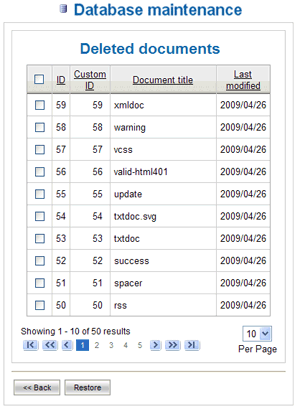

Database Maintenance |
In LogicalDOC the system administrator can perform maintenance of the
database documents by selecting the menu System and then Database
maintenance. You can see a page with data regarding the actual size of
the documents database, the total number of documents, the size occupied
by all the deleted files and the number of deleted files.
Picture 57: Database maintenance
Only the administrator can use this feature because in LogicalDOC the
document deletion is only a logical operation which does not involve a
physical cancellation neither from the hard disk nor from the database. The
operations that can be done on the database documents are: the physical
cancellation of documents and the recovery of logically deleted documents. In
the first case, by pressing the Clear Database button, after a warning message,
LogicalDOC starts the execution of the task Database Cleaner, which removes
physically, and from the database, all the documents previously cancelled only
logically. In the second case, by pressing the Restore button, you can recover
logically deleted documents: you can see a listing page of all the deleted
items. Select the documents you want to restore and press Restore button.
These documents will be put back in the same original folder, just
like how you retrieve your files from the ‘Trash’ folder on your PC.

Picture 58: Restore deleted documents
| We recommend the system administrator to manage the database documents carefully with periodic cleaning, since the logically deleted documents could reach a size that could be too big it can reduce the disk space on the machine. | |
As mentioned before, there is a scheduled task Database Cleaner In LogicalDoc that periodically removes all the deleted documents. If you wish to stop this automatic operation, you need to disable the scheduled task in the Tasks list page. .